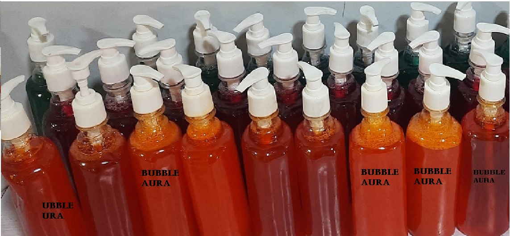
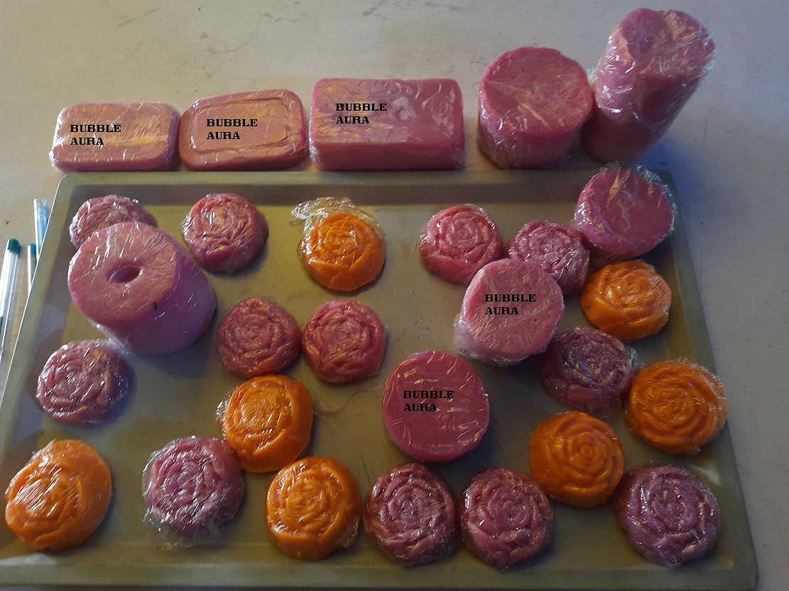
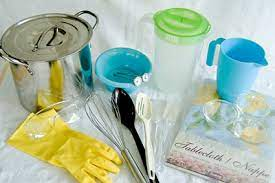
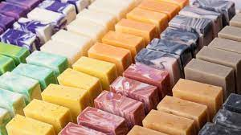

The first concrete evidence we have of soap-like
substance is dated around 2800 BC., the first soap
makers were Babylonians, Mesopotamians,
Egyptians, as well as the ancient Greeks and Romans.
All of them made soap by mixing fat, oils and salts.
In this elective they have made two different types
of soap andthis work was handled by Mrs.Onyolu
our vice principal.
#1LIQUID SOAP

ingredients and quantity;10-15litres
{1.nitrosol-50g
{2.caustic soda-40g
{3.soda ash-200g
{4.sodium laurel/sulphate(SLS)/texapon-50g
{5.sodium tripolyphosphate-60g
{6.sulphonic-500g
{7.foaming booster-500g
{8.colour-20g
{9.perfume-30ml
{10.formalin-30ml
Process
{1.dissolve nitrosol bit while stirring in water
{2.dissolve caustic soda in water before adding to the nitrosol solution
{3.dissolve soda ash in water before adding to the nistrosol, caustic soda solution
{4.dissolve SLS in water before adding it to the solution
{5.dissolve STPP in water before adding it to the solution
{6.add sulphonic
{7.add foaming booster
{8.dissolve colour and pour into the solution
{9.add perfume
{10.add formalin(choice)
{11.add more water if thick
#2 BAR SOAP

ingredients and quantity
{1.water-69g
{2.caustic soda-20g
{3.low heat
{4.steric acid-40g
{5.coconut oil-100g
{6.distilled water-50ml
{7.perfum-30ml
{8.glycerine-50ml
{9.glycerol-90g
{10.ethanol-20ml
{11.alcohol-78g
{12.sugar-15g
{13.propylene alycol-80ml
STEPS
{1.mix the caustic soda and water then leave it to settle .
{2.light up the heat (low temprature)
{3.pour in th coconut oil and steric acid
{4.add the caustic soda
{5.light up the heat (low temprature)
{6.add glycerine, mix,add alcohol,lower heat
{7.add perfume
{8.spray on some alcohol
{9.add the sugar water solution and turn of the heat
{10.spray on sme alcohol
{11.pour into thew mould and add colour it desired
{12. leave for 24 hrs
Lastly we are going to learn the easiest product ,bleach ok happy learners, we all learned how to make liquid and bar soap in CRAFT ROYALE!!
please always remember that SOAPMAKING IS JUST COOKING(DON'T LICK THE SPOON)
#3 BLEACH

INGREDIENTS
{1.chlorine-300g
{2.Industrial salt-250g
{3.caustic soda-150g
{4.soda ash-300g
Process
{1.put 3 litres of water in a container
{2.add all the chemicals into the water one by one in no particular order
{3.stir for a while
{4.cover and allow to settle
{5.the topside is the bleach, the sediments are useless
Now lets here more about the soap made by the our students,in a talk with
Lady Ujunwa C. Precious a member of the soap making elective
Now all hopes are on you our wonderful parents ,to be a patronage
and the product of the students on this day
our product name is BUBBLE AURA!!!!

that round it up for this elective onCRAFT ROYALE!
this page was created by a student in inovation.tech,Lady Joseph
Emmanuella